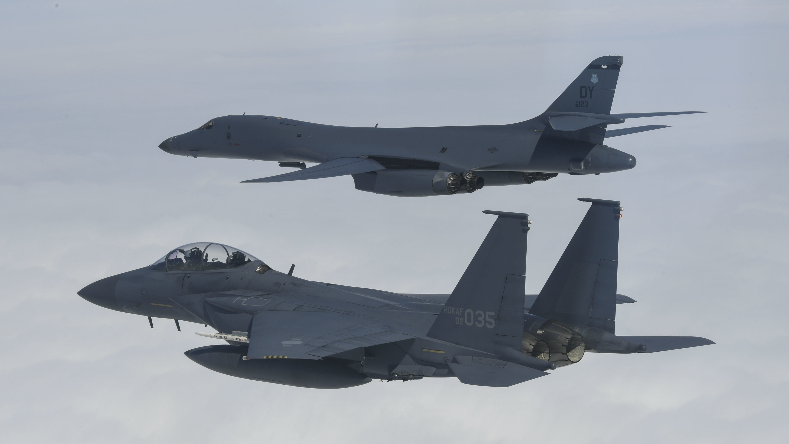

Ever wonder what those letters in an aircraft's name mean?
Well some of them are more obvious than some, all fighter planes have the letter F in their name however, what happens when multiple letters are in front and behiend the numbers? Allow me to explain!
All American and in extention Canadian military aircraft are split into diffrent catagories and we'll delve into what each of them mean later, but the diffrent letters are indicitive of the role of the aircraft and the stutus of that aircraft in the surface as well as the modifications on that aircraft so that having a general knowledge of how aircraft are designed combined with the name of the craft will give you a general idea of what it looks like, what it does and possibly even what kind of armament they carry if you know it well enough. By the time that you're done exploring this website you will know what a YEH-60B aircraft is and what it does. :D

A, B, C, E, F, L, O, P, R, S, T, U, X .
Its called the MDS system and it works like this M stands for Mission, this is then split into Baisic mission and Modified Mission the last or only letter is the baisic mission, and the ones before it are modified missions. The D stands for designation which means the design number for that aircraft and finally the S stands for series which maens the version within that design, so in the end what a KC-135B means that this aircraft is a cargo aircraft modified for the purpose of being a fuel tanker (for those that dont know a tanker carries extra fuel in order to be able to transfer it to other friendly aircraft) and its the 135 design of aircraft classified as cargo aircraft and its the B/ second varient of that design and designation.
The reason why the MDS system exists is because before and during World War One a singular model of aircraft could have several names between the diffrent services and this was problematic for the reason that the each service might refer to an aircraft by a completely diffrent name, for example the F/A- 18 might be refered to as a "Stinger" a "Wasp" along with the name that it has now, the Hornet. This system allows for easier communication as well as logistics, standrdisation is always important when it comes to effective communication in order for co-operation between naval, air and ground forces.